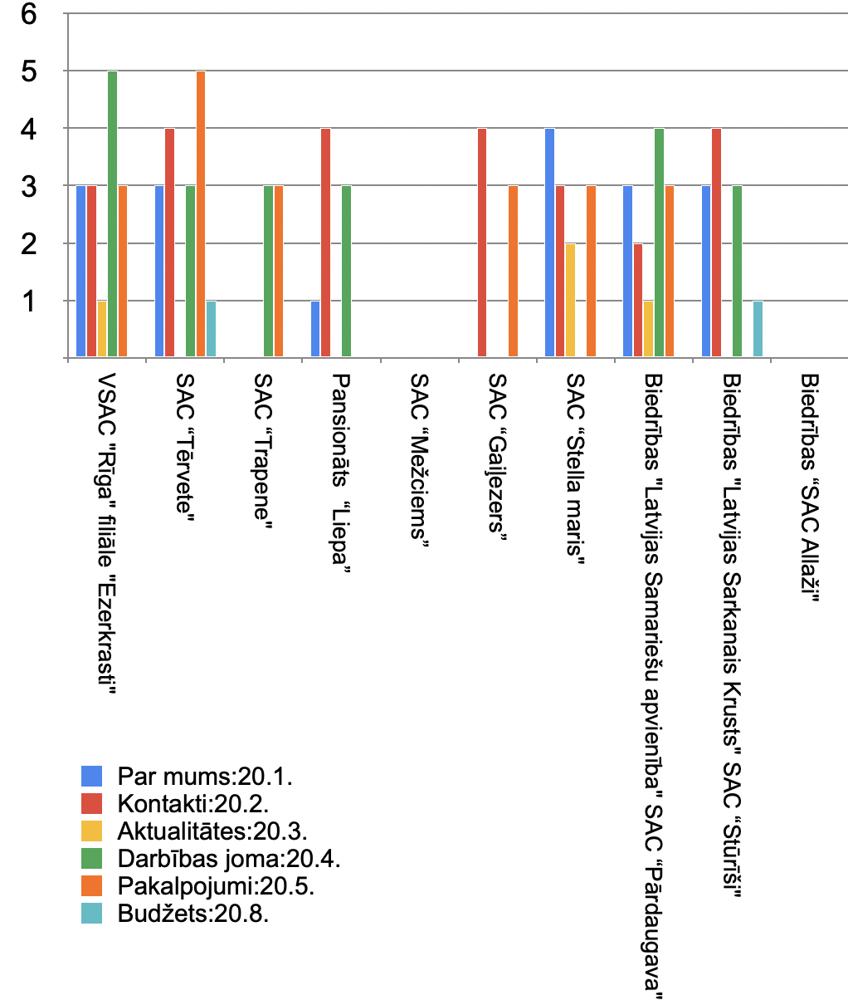

Sociālās aprūpes centri jeb pansionāti 
Pēc nejaušības principa tika izvēlēti 10 Rīgas novada sociālās aprūpes centri jeb pansionāti, un izvērtēta to atbilstība ministru kabineta noteikumu nr. 445 “Kārtība, kādā iestādes ievieto informāciju internetā”, 20. panta prasībām, par to, kādai jābūt oficiālo tīmekļvietņu struktūrai un saturam.
Izvērējot pansionātu oficiālās tīmekļvietnes, var secināt, ka tās ministru kabineta noteikumiem atbilst tikai daļēji vai neatbilst vispār. Diviem sociālās aprūpes centiem “ Mežciems” un “Allaži” oficiālo tīmekļa vietņu nav vispār. “Allažiem” ir norādīta Facebook mājas lapa, bet to nevar uzskatīt par oficiālu tīmekļa vietni. Tādas sadaļas kā publikācijas un pārskati; sabiedrības līdzdalība; budžets; īpašumi; viegli lasīt, nebija nevienam no izvērtēšanā esošiem pansionātiem.
Visvairāk sadaļu ministra kabineta noteikumiem atbilst, sociālā aprūpes centra "Rīga" filiāle “Ezerkrasti”, “Tērvete” un “Pārdaugava”.